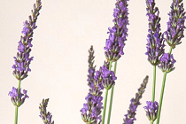

Achillé
Achillée vient du grec Akhileios, l'herbe d'Achille. Elle lui fût offerte par Aphrodite pour apaiser ses mortelles blessures lors du siège de Troie. En dehors de la mythologie, l'achillée a toujours été utilisée contre les plaies. L'achillée millefeuille est une herbe aromatique aux vertus très prisées en herboristerie. Son nom lui vient de ses multiples petites fleurs très découpées qui forment ses capitules, le plus souvent blancs, roses ou pourpres. Conseils de Flower.fr pour la mise à l'eau : changer l'eau régulièrement et comme toutes les fleurs des champs, bien nettoyer la tige de ses feuilles pour que l'eau ne se salisse pas trop.

Arum
L'arum Zantedeschia ou Arum des Fleuristes est une fleur somptueuse aux longues spathes de 12 à 25 cm de long. Une belle enroulée, symbole de grande beauté qui dégraffe sa splendide robe, blanche ou colorée, en danse frivole, en valse folle. Conseils de Flower.fr pour la mise en eau : les arums sont très faciles d'entretien, leurs tiges, une fois recoupées, boivent beaucoup : vous les garderez longtemps si vous les mettez dans peu d'eau. N'hésitez pas à changer l'eau et à les recouper régulièrement pour éviter que la tige ne se délite et ne pourrisse dans l'eau.

Lavande
Les nuances mauves et bleues des fleurs de lavande et son odeur si particulière évoquent les massifs bleutés qui strient les champs de Provence. Avec l'Olivier, elle apporte à nos bouquets un air de méditerranée. Conseils de Flower.fr pour la mise à l'eau : la tenue en haut n'est pas excellente, il vaut la faire sécher, la tête en bas.
